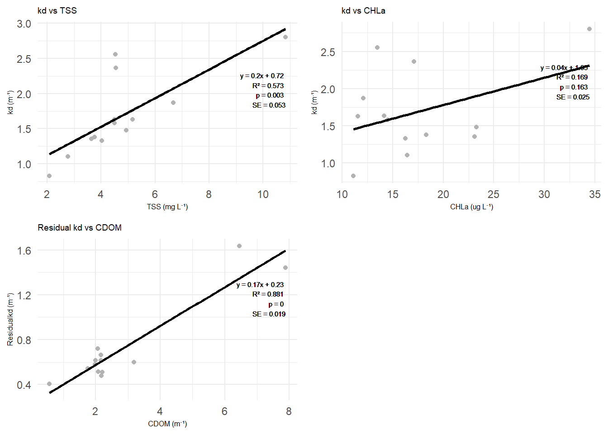
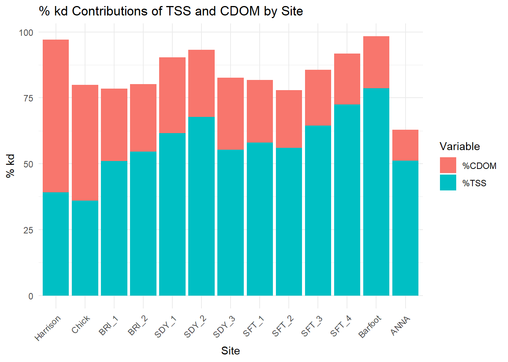

library(tidyverse)
library(kableExtra)
library(ggplot2)
library(car)
library(patchwork)
library(dplyr)
library(gridExtra)
library(tidyr)
library(readxl)
allthesis <- read_excel("C:/Users/barne/Downloads/ThesisRData.xlsx", sheet = 1)
allthesis <- allthesis |>
mutate(TSS = as.numeric(TSS))ThesisLMM
avgthesis <- allthesis |>
group_by(Site, Lake) |> # Include Lake as a grouping variable
summarise(across(where(is.numeric), mean, na.rm = TRUE), .groups = "drop")Basic LM Models
First we want to plot the regressions between light attenuation and each of our predictors while also displaying the slope equation, R2, Pvalue, and standard error
# Function to get regression statistics (equation, R2, p-value, SE)
get_regression_stats <- function(x, y) {
model <- lm(y ~ x)
eq <- paste("y = ", round(coef(model)[2], 2), "x + ", round(coef(model)[1], 2), sep = "")
rsq <- paste("R² = ", round(summary(model)$r.squared, 3), sep = "")
pval <- paste("p = ", round(summary(model)$coefficients[2, 4], 3), sep = "")
se <- paste("SE = ", round(summary(model)$coefficients[2, 2], 3), sep = "") # Extract SE
return(list(eq = eq, rsq = rsq, pval = pval, se = se))
}
reg_stats_p1 <- get_regression_stats(avgthesis$TSS, avgthesis$kd)
reg_stats_p2 <- get_regression_stats(avgthesis$CHLa, avgthesis$kd)# TSS vs kd
p1 <- ggplot(avgthesis, aes(x = TSS, y = kd)) +
geom_point(color = "gray70") +
geom_smooth(method = "lm", color = "black", se = FALSE) +
labs(title = "kd vs TSS", x = "TSS (mg L⁻¹)", y = "kd (m⁻¹)") +
geom_text(x = max(avgthesis$TSS), y = max(avgthesis$kd),
label = paste(reg_stats_p1$eq, "\n", reg_stats_p1$rsq, "\n", reg_stats_p1$pval, "\n", reg_stats_p1$se),
hjust = 1, vjust = 2, size = 2, color = "black") +
theme_minimal() +
theme(
plot.title = element_text(size = 7, color = "black"),
axis.title.x = element_text(size = 6, color = "black"),
axis.title.y = element_text(size = 6, color = "black"))
# CHLa vs kd
p2 <- ggplot(avgthesis, aes(x = CHLa, y = kd)) +
geom_point(color = "gray70") +
geom_smooth(method = "lm", color = "black", se = FALSE) +
labs(title = "kd vs CHLa", x = "CHLa (ug L⁻¹)", y = "kd (m⁻¹)") +
geom_text(x = max(avgthesis$CHLa), y = max(avgthesis$kd),
label = paste(reg_stats_p2$eq, "\n", reg_stats_p2$rsq, "\n", reg_stats_p2$pval, "\n", reg_stats_p2$se),
hjust = 1, vjust = 2, size = 2, color = "black") +
theme_minimal() +
theme(
plot.title = element_text(size = 7, color = "black"),
axis.title.x = element_text(size = 6, color = "black"),
axis.title.y = element_text(size = 6, color = "black"))To look at the relationship between kd and CDOM, we first need to find the residual kd. We do this by finding the proportion of kd due to TSS, then subtracting that out of our original kd values for each site.
# Calculate residual kd
avgthesis <- avgthesis |>
mutate(
Residualkd = kd - (TSS*0.20337)
)
reg_stats_p3 <- get_regression_stats(avgthesis$CDOM, avgthesis$Residualkd)Now we can perform a regression between CDOM and residual kd then arrange our plots into one output
# CDOM vs Residual kd
p3 <- ggplot(avgthesis, aes(x = CDOM, y = Residualkd)) +
geom_point(color = "gray70") +
geom_smooth(method = "lm", color = "black", se = FALSE) +
labs(title = "Residual kd vs CDOM", x = "CDOM (m⁻¹)", y = "Residualkd (m⁻¹)") +
geom_text(x = max(avgthesis$CDOM), y = max(avgthesis$Residualkd),
label = paste(reg_stats_p3$eq, "\n", reg_stats_p3$rsq, "\n", reg_stats_p3$pval, "\n", reg_stats_p3$se),
hjust = 1, vjust = 2, size = 2, color = "black") +
theme_minimal() +
theme(
plot.title = element_text(size = 7, color = "black"),
axis.title.x = element_text(size = 6, color = "black"),
axis.title.y = element_text(size = 6, color = "black"))
# Plot all regressions in the same output
grid.arrange(p1, p2, p3, ncol = 2)
To examine these relationships further, we can look at the summaries of each regression
p1summary <- lm(kd ~ TSS, data = allthesis)
#summary(p1summary)
p2summary <- lm(kd ~ CHLa, data = avgthesis)
#summary(p2summary)
p3summary <- lm(Residualkd ~ CDOM, data = avgthesis)
#summary(p3summary)We can also look at the diagnostic plots for each of the models, we do this by creating a function and calling that function with each model we want to examine
# Function to create diagnostic plots for each model
create_diagnostic_plots <- function(model) {
par(mfrow = c(2, 2))
# Residuals vs Fitted plot
plot(model, which = 1, main = "Residuals vs Fitted")
# Normal Q-Q plot
plot(model, which = 2, main = "Normal Q-Q")
# Scale-Location plot
plot(model, which = 3, main = "Scale-Location")
# Residuals vs Leverage plot
plot(model, which = 5, main = "Residuals vs Leverage")
}
#create_diagnostic_plots(p1summary)
#create_diagnostic_plots(p2summary)
#create_diagnostic_plots(p3summary)Now we want to examine how much light attenuation at each site can be attributed to the effects of TSS and CDOM (our two significant predictors). To do this, we multiply average predictor values for each site by the slope of the predictor relationship, then divide this by the original kd. Finally, we multiply by 100 to convert this proportion to a percentage.
PercentContributions <- avgthesis |>
mutate(
`%TSS` = ((TSS*0.20337)/kd)*100,
`%CDOM` = ((CDOM*0.17382)/kd)*100) |>
summarize(`Site`, `%TSS`, `%CDOM`)# Pivot the data into long format for ggplot
PercentContributions_long <- PercentContributions |>
pivot_longer(cols = c(`%TSS`, `%CDOM`),
names_to = "Variable",
values_to = "PercentContribution")
# Manually recoding the 'Site' variable
PercentContributions_long <- PercentContributions_long |>
mutate(
Site = dplyr::recode(Site,
"2-BRI010.78" = "BRI_1",
"2-BRI013.12" = "BRI_2",
"5ANTW127.14" = "Barfoot",
"Chickahominy" = "Chick",
"Harrison" = "Harrison",
"2-SDY004.27" = "SDY_1",
"2-SDY005.85" = "SDY_2",
"2-MBN000.96" = "SDY_3",
"2-SFT031.08" = "SFT_1",
"2-DYC000.19" = "SFT_2",
"2-SFT033.42" = "SFT_3",
"2-SFT034.38" = "SFT_4",
"Dam Surface" = "ANNA"))
# Change the site order for plot visualization
site_order <- c( "Harrison", "Chick", "BRI_1", "BRI_2", "SDY_1", "SDY_2", "SDY_3", "SFT_1", "SFT_2", "SFT_3", "SFT_4", "Barfoot", "ANNA")
PercentContributions_long <- PercentContributions_long |>
mutate(Site = factor(Site, levels = site_order))ggplot(PercentContributions_long, aes(x = Site, y = PercentContribution, fill = Variable)) +
geom_bar(stat = "identity", position = "stack") +
labs(
title = "% kd Contributions of TSS and CDOM by Site",
x = "Site",
y = "% kd",
fill = "Variable"
) +
theme_minimal() +
theme(axis.text.x = element_text(angle = 45, hjust = 1)) 
Multivariate Linear Regression
response <- "kd"
predictors <- c("TSS", "CDOM", "CHLa")
# Generate all combinations of predictors
all_combinations <- unlist(
lapply(0:length(predictors), function(x) combn(predictors, x, simplify = FALSE)),
recursive = FALSE
)
model_results <- lapply(all_combinations, function(predictor_set) {
formula <- as.formula(paste(response, "~", ifelse(length(predictor_set) == 0, "1", paste(predictor_set, collapse = " + "))))
model <- lm(formula, data = avgthesis)
list(
predictors = predictor_set,
model = model,
AIC = AIC(model))})
# Convert results to df
results_df <- do.call(rbind, lapply(model_results, function(x) {
data.frame(
Predictors = paste(x$predictors, collapse = " + "),
AIC = x$AIC)}))
# Find the model with the lowest AIC
min_AIC <- min(results_df$AIC)
# Calculate the delta AIC for each model
results_df <- results_df |>
mutate(Delta_AIC = AIC - min_AIC) |>
arrange(Delta_AIC)
print(results_df) Predictors AIC Delta_AIC
1 TSS + CDOM -12.69800 0.0000000
2 TSS + CDOM + CHLa -12.24984 0.4481614
3 CDOM + CHLa 14.42785 27.1258567
4 TSS 16.37892 29.0769189
5 CDOM 16.94473 29.6427346
6 TSS + CHLa 18.05136 30.7493627
7 CHLa 25.03215 37.7301524
8 25.43919 38.1371906lm_tsscdom <- lm(kd ~ TSS + CDOM, data = avgthesis)
summary(lm_tsscdom)
Call:
lm(formula = kd ~ TSS + CDOM, data = avgthesis)
Residuals:
Min 1Q Median 3Q Max
-0.189702 -0.041730 -0.004259 0.023638 0.260876
Coefficients:
Estimate Std. Error t value Pr(>|t|)
(Intercept) 0.35100 0.09457 3.712 0.00403 **
TSS 0.17402 0.01706 10.201 1.32e-06 ***
CDOM 0.17916 0.01799 9.960 1.65e-06 ***
---
Signif. codes: 0 '***' 0.001 '**' 0.01 '*' 0.05 '.' 0.1 ' ' 1
Residual standard error: 0.1245 on 10 degrees of freedom
Multiple R-squared: 0.9609, Adjusted R-squared: 0.9531
F-statistic: 122.8 on 2 and 10 DF, p-value: 9.153e-08# Effects of CHLa are still insignificant here, slopes are comparable to CDOM+TSS model
lm_allpred <- lm(kd ~ TSS + CDOM + CHLa, data = avgthesis)
summary(lm_allpred)
Call:
lm(formula = kd ~ TSS + CDOM + CHLa, data = avgthesis)
Residuals:
Min 1Q Median 3Q Max
-0.182594 -0.076012 0.003016 0.037342 0.238244
Coefficients:
Estimate Std. Error t value Pr(>|t|)
(Intercept) 0.416306 0.112054 3.715 0.00481 **
TSS 0.189352 0.022206 8.527 1.32e-05 ***
CDOM 0.178032 0.017895 9.949 3.73e-06 ***
CHLa -0.007777 0.007280 -1.068 0.31323
---
Signif. codes: 0 '***' 0.001 '**' 0.01 '*' 0.05 '.' 0.1 ' ' 1
Residual standard error: 0.1236 on 9 degrees of freedom
Multiple R-squared: 0.9653, Adjusted R-squared: 0.9537
F-statistic: 83.43 on 3 and 9 DF, p-value: 6.897e-07Linear Mixed Effect Models
Here we want to use other variables as random effects to account for the nested design of the study: we have Dates within Sites within Lakes
library(lme4)
library(MuMIn)
library(lmerTest)lmm1tss <- lmer(kd ~ CDOM + CHLa + TSS + (1|Date), data = allthesis)
summary(lmm1tss)Linear mixed model fit by REML. t-tests use Satterthwaite's method [
lmerModLmerTest]
Formula: kd ~ CDOM + CHLa + TSS + (1 | Date)
Data: allthesis
REML criterion at convergence: 103.2
Scaled residuals:
Min 1Q Median 3Q Max
-3.6528 -0.4259 -0.0190 0.4639 2.2400
Random effects:
Groups Name Variance Std.Dev.
Date (Intercept) 0.07915 0.2813
Residual 0.13398 0.3660
Number of obs: 73, groups: Date, 28
Fixed effects:
Estimate Std. Error df t value Pr(>|t|)
(Intercept) 0.455969 0.159210 45.872931 2.864 0.006290 **
CDOM 0.173599 0.025587 50.623584 6.785 1.23e-08 ***
CHLa 0.012678 0.008342 61.572973 1.520 0.133701
TSS 0.113044 0.027897 53.745013 4.052 0.000164 ***
---
Signif. codes: 0 '***' 0.001 '**' 0.01 '*' 0.05 '.' 0.1 ' ' 1
Correlation of Fixed Effects:
(Intr) CDOM CHLa
CDOM -0.466
CHLa -0.391 0.106
TSS -0.227 -0.139 -0.652# Get the fixed effect estimates
fixed_effects <- fixef(lmm1tss)
# Get the summary
summary_lmm1tss <- summary(lmm1tss)
# Extract p-values (if available)
p_values <- if ("Pr(>|t|)" %in% colnames(summary_lmm1tss$coefficients)) {
summary_lmm1tss$coefficients[, "Pr(>|t|)"]
} else {
NA
}
# Extract standard errors
se_values <- summary_lmm1tss$coefficients[, "Std. Error"]
# R-squared
r_squared_values <- r.squaredGLMM(lmm1tss)
# Print full equation
equation <- paste0("y = ", round(fixed_effects["(Intercept)"], 4))
for (name in names(fixed_effects)[-1]) {
equation <- paste0(equation, " + ", round(fixed_effects[name], 4), "*", name)
}
# Display
cat("\nThe relationship equation is:\n", equation, "\n\n")
The relationship equation is:
y = 0.456 + 0.1736*CDOM + 0.0127*CHLa + 0.113*TSS for (name in names(fixed_effects)[-1]) {
cat(paste0("Predictor: ", name, "\n"))
cat(" Coefficient: ", round(fixed_effects[name], 4), "\n")
cat(" P-value: ", round(p_values[name], 4), "\n")
cat(" Std. Error: ", round(se_values[name], 4), "\n\n")
}Predictor: CDOM
Coefficient: 0.1736
P-value: 0
Std. Error: 0.0256
Predictor: CHLa
Coefficient: 0.0127
P-value: 0.1337
Std. Error: 0.0083
Predictor: TSS
Coefficient: 0.113
P-value: 2e-04
Std. Error: 0.0279 cat("Marginal R-squared: ", round(r_squared_values[1], 4), "\n")Marginal R-squared: 0.5929 cat("Conditional R-squared: ", round(r_squared_values[2], 4), "\n")Conditional R-squared: 0.7441 Now we can also look at the residual plots for this model
#plot(lmm1tss)
#qqnorm(resid(lmm1tss))
#qqline(resid(lmm1tss))Changing Date Format
# Change format of Date to be Month/Year instead of Year/Month/Day
# This will allow us to account for "Date" as a random effect
# This can't currently be done as reservoirs were sampled on different days in each month
library(lubridate)
allthesis <- allthesis %>%
mutate(Date = as.Date(Date),
Date = format(Date, "%m/%Y")) Using just Date as a random effect
lmmall <- lmer(kd ~ CDOM + CHLa + TSS + (1|Date), data = allthesis)
summary(lmmall)Linear mixed model fit by REML. t-tests use Satterthwaite's method [
lmerModLmerTest]
Formula: kd ~ CDOM + CHLa + TSS + (1 | Date)
Data: allthesis
REML criterion at convergence: 107.7
Scaled residuals:
Min 1Q Median 3Q Max
-3.9224 -0.4116 0.0212 0.5630 2.7193
Random effects:
Groups Name Variance Std.Dev.
Date (Intercept) 0.02786 0.1669
Residual 0.18114 0.4256
Number of obs: 73, groups: Date, 6
Fixed effects:
Estimate Std. Error df t value Pr(>|t|)
(Intercept) 0.453489 0.151140 35.758495 3.000 0.00489 **
CDOM 0.167531 0.021996 65.566875 7.616 1.33e-10 ***
CHLa 0.009699 0.007388 66.698150 1.313 0.19375
TSS 0.127265 0.024280 67.010585 5.242 1.74e-06 ***
---
Signif. codes: 0 '***' 0.001 '**' 0.01 '*' 0.05 '.' 0.1 ' ' 1
Correlation of Fixed Effects:
(Intr) CDOM CHLa
CDOM -0.411
CHLa -0.391 0.081
TSS -0.247 -0.103 -0.594#anova(lmm1tss)Using both Date and Lake as random effects
lmmall2 <- lmer(kd ~ CDOM + CHLa + TSS + (1|Date/Lake), data = allthesis)
summary(lmmall2)Linear mixed model fit by REML. t-tests use Satterthwaite's method [
lmerModLmerTest]
Formula: kd ~ CDOM + CHLa + TSS + (1 | Date/Lake)
Data: allthesis
REML criterion at convergence: 99.5
Scaled residuals:
Min 1Q Median 3Q Max
-2.1590 -0.3452 -0.0108 0.3580 2.2699
Random effects:
Groups Name Variance Std.Dev.
Lake:Date (Intercept) 0.13802 0.3715
Date (Intercept) 0.04608 0.2147
Residual 0.08043 0.2836
Number of obs: 73, groups: Lake:Date, 40; Date, 6
Fixed effects:
Estimate Std. Error df t value Pr(>|t|)
(Intercept) 0.491629 0.184838 25.231448 2.660 0.0134 *
CDOM 0.169006 0.025455 33.837533 6.639 1.32e-07 ***
CHLa 0.008713 0.007932 66.513967 1.098 0.2760
TSS 0.122799 0.026674 62.222536 4.604 2.10e-05 ***
---
Signif. codes: 0 '***' 0.001 '**' 0.01 '*' 0.05 '.' 0.1 ' ' 1
Correlation of Fixed Effects:
(Intr) CDOM CHLa
CDOM -0.467
CHLa -0.365 0.109
TSS -0.193 -0.115 -0.618Using average data instead of all data (Lake random effect)
lmmavg1 <- lmer(kd ~ CDOM + CHLa + TSS + (1|Lake), data = avgthesis)
summary(lmmavg1)Linear mixed model fit by REML. t-tests use Satterthwaite's method [
lmerModLmerTest]
Formula: kd ~ CDOM + CHLa + TSS + (1 | Lake)
Data: avgthesis
REML criterion at convergence: -0.9
Scaled residuals:
Min 1Q Median 3Q Max
-0.90516 -0.46684 -0.03639 0.34804 1.23325
Random effects:
Groups Name Variance Std.Dev.
Lake (Intercept) 0.032474 0.18020
Residual 0.002154 0.04641
Number of obs: 13, groups: Lake, 7
Fixed effects:
Estimate Std. Error df t value Pr(>|t|)
(Intercept) 0.384004 0.153968 7.378317 2.494 0.039672 *
CDOM 0.184629 0.028223 4.511833 6.542 0.001834 **
CHLa 0.007120 0.005899 5.684350 1.207 0.275243
TSS 0.137993 0.019494 6.881489 7.079 0.000214 ***
---
Signif. codes: 0 '***' 0.001 '**' 0.01 '*' 0.05 '.' 0.1 ' ' 1
Correlation of Fixed Effects:
(Intr) CDOM CHLa
CDOM -0.557
CHLa -0.408 -0.022
TSS -0.253 -0.091 -0.448AIC(lmmall, lmmall2, lmmavg1) df AIC
lmmall 6 119.65644
lmmall2 7 113.51596
lmmavg1 6 11.05346Scaling Data then LMM
It is good practice to standardise your explanatory variables before proceeding so that they have a mean of zero (“centering”) and standard deviation of one (“scaling”). It ensures that the estimated coefficients are all on the same scale, making it easier to compare effect sizes.
scale() centers the data (the column mean is subtracted from the values in the column) and then scales it (the centered column values are divided by the column’s standard deviation).
#hist(allthesis$kd)
#hist(allthesis$TSS)
#hist(allthesis$CHLa)
#hist(allthesis$CDOM)Here we scale our data, indicated by “predictor”1:
allthesis$kd1 <- scale(allthesis$kd, center = TRUE, scale = TRUE)
#hist(allthesis$kd1)
allthesis$TSS1 <- scale(allthesis$TSS, center = TRUE, scale = TRUE)
#hist(allthesis$TSS1)
allthesis$CHLa1 <- scale(allthesis$CHLa, center = TRUE, scale = TRUE)
#hist(allthesis$CHLa1)
allthesis$CDOM1 <- scale(allthesis$CDOM, center = TRUE, scale = TRUE)
#hist(allthesis$CDOM1)Here we try to normalize/standardize our predictors further by log transforming data first, then scaling, indicated by “predictor”2
allthesis$kd2 <- scale(allthesis$kd, center = TRUE, scale = TRUE)
#hist(allthesis$kd2)
allthesis$TSS2 <- scale(log(allthesis$TSS), center = TRUE, scale = TRUE)
#hist(allthesis$TSS2)
allthesis$CHLa2 <- scale(log(allthesis$CHLa), center = TRUE, scale = TRUE)
#hist(allthesis$CHLa2)
allthesis$CDOM2 <- scale(log(allthesis$CDOM), center = TRUE, scale = TRUE)
#hist(allthesis$CDOM2)# Scaled Predictors, Date grouping
lmmall3 <- lmer(kd1 ~ CDOM1 + CHLa1 + TSS1 + (1|Date), data = allthesis)
summary(lmmall3)Linear mixed model fit by REML. t-tests use Satterthwaite's method [
lmerModLmerTest]
Formula: kd1 ~ CDOM1 + CHLa1 + TSS1 + (1 | Date)
Data: allthesis
REML criterion at convergence: 150.9
Scaled residuals:
Min 1Q Median 3Q Max
-3.9224 -0.4116 0.0212 0.5630 2.7193
Random effects:
Groups Name Variance Std.Dev.
Date (Intercept) 0.05851 0.2419
Residual 0.38043 0.6168
Number of obs: 73, groups: Date, 6
Fixed effects:
Estimate Std. Error df t value Pr(>|t|)
(Intercept) 0.03444 0.12296 5.10459 0.280 0.790
CDOM1 0.54749 0.07188 65.56688 7.616 1.33e-10 ***
CHLa1 0.12633 0.09623 66.69815 1.313 0.194
TSS1 0.48833 0.09317 67.01058 5.242 1.74e-06 ***
---
Signif. codes: 0 '***' 0.001 '**' 0.01 '*' 0.05 '.' 0.1 ' ' 1
Correlation of Fixed Effects:
(Intr) CDOM1 CHLa1
CDOM1 -0.021
CHLa1 0.056 0.081
TSS1 -0.032 -0.103 -0.594# Scaled Predictors, Date and Lake grouping
lmmall4 <- lmer(kd1 ~ CDOM1 + CHLa1 + TSS1 + (1|Date/Lake), data = allthesis)
summary(lmmall4)Linear mixed model fit by REML. t-tests use Satterthwaite's method [
lmerModLmerTest]
Formula: kd1 ~ CDOM1 + CHLa1 + TSS1 + (1 | Date/Lake)
Data: allthesis
REML criterion at convergence: 142.8
Scaled residuals:
Min 1Q Median 3Q Max
-2.1590 -0.3452 -0.0108 0.3580 2.2699
Random effects:
Groups Name Variance Std.Dev.
Lake:Date (Intercept) 0.28987 0.5384
Date (Intercept) 0.09677 0.3111
Residual 0.16893 0.4110
Number of obs: 73, groups: Lake:Date, 40; Date, 6
Fixed effects:
Estimate Std. Error df t value Pr(>|t|)
(Intercept) 0.03966 0.16396 5.09963 0.242 0.818
CDOM1 0.55231 0.08319 33.83753 6.639 1.32e-07 ***
CHLa1 0.11349 0.10332 66.51397 1.098 0.276
TSS1 0.47119 0.10235 62.22254 4.604 2.10e-05 ***
---
Signif. codes: 0 '***' 0.001 '**' 0.01 '*' 0.05 '.' 0.1 ' ' 1
Correlation of Fixed Effects:
(Intr) CDOM1 CHLa1
CDOM1 -0.127
CHLa1 -0.012 0.109
TSS1 -0.004 -0.115 -0.618#Log transformed and scaled predictors, Date grouping
lmmall5 <- lmer(kd2 ~ CDOM2 + CHLa2 + TSS2 + (1|Date), data = allthesis)
summary(lmmall5)Linear mixed model fit by REML. t-tests use Satterthwaite's method [
lmerModLmerTest]
Formula: kd2 ~ CDOM2 + CHLa2 + TSS2 + (1 | Date)
Data: allthesis
REML criterion at convergence: 165.6
Scaled residuals:
Min 1Q Median 3Q Max
-2.8943 -0.5132 -0.0430 0.5096 3.3781
Random effects:
Groups Name Variance Std.Dev.
Date (Intercept) 0.04499 0.2121
Residual 0.47991 0.6928
Number of obs: 73, groups: Date, 6
Fixed effects:
Estimate Std. Error df t value Pr(>|t|)
(Intercept) 0.04044 0.11923 5.13375 0.339 0.747893
CDOM2 0.47380 0.08464 68.06166 5.598 4.22e-07 ***
CHLa2 0.14567 0.09814 67.90831 1.484 0.142380
TSS2 0.39065 0.10093 68.14840 3.871 0.000246 ***
---
Signif. codes: 0 '***' 0.001 '**' 0.01 '*' 0.05 '.' 0.1 ' ' 1
Correlation of Fixed Effects:
(Intr) CDOM2 CHLa2
CDOM2 -0.016
CHLa2 0.052 0.113
TSS2 -0.022 -0.307 -0.493#Log transformed and scaled predictors, Date and Lake grouping
lmmall6 <- lmer(kd2 ~ CDOM2 + CHLa2 + TSS2 + (1|Date/Lake), data = allthesis)
summary(lmmall6)Linear mixed model fit by REML. t-tests use Satterthwaite's method [
lmerModLmerTest]
Formula: kd2 ~ CDOM2 + CHLa2 + TSS2 + (1 | Date/Lake)
Data: allthesis
REML criterion at convergence: 151
Scaled residuals:
Min 1Q Median 3Q Max
-2.53591 -0.26743 0.01217 0.28440 2.28477
Random effects:
Groups Name Variance Std.Dev.
Lake:Date (Intercept) 0.44103 0.6641
Date (Intercept) 0.07249 0.2692
Residual 0.16117 0.4015
Number of obs: 73, groups: Lake:Date, 40; Date, 6
Fixed effects:
Estimate Std. Error df t value Pr(>|t|)
(Intercept) 0.16268 0.16220 5.12716 1.003 0.360858
CDOM2 0.46469 0.09854 39.56616 4.716 2.97e-05 ***
CHLa2 0.08396 0.10124 65.87486 0.829 0.409940
TSS2 0.39471 0.10804 67.05168 3.653 0.000509 ***
---
Signif. codes: 0 '***' 0.001 '**' 0.01 '*' 0.05 '.' 0.1 ' ' 1
Correlation of Fixed Effects:
(Intr) CDOM2 CHLa2
CDOM2 -0.093
CHLa2 -0.009 0.095
TSS2 0.040 -0.310 -0.507anova(lmmall, lmmall2, lmmall3, lmmall4, lmmall5, lmmall6)Data: allthesis
Models:
lmmall: kd ~ CDOM + CHLa + TSS + (1 | Date)
lmmall3: kd1 ~ CDOM1 + CHLa1 + TSS1 + (1 | Date)
lmmall5: kd2 ~ CDOM2 + CHLa2 + TSS2 + (1 | Date)
lmmall2: kd ~ CDOM + CHLa + TSS + (1 | Date/Lake)
lmmall4: kd1 ~ CDOM1 + CHLa1 + TSS1 + (1 | Date/Lake)
lmmall6: kd2 ~ CDOM2 + CHLa2 + TSS2 + (1 | Date/Lake)
npar AIC BIC logLik deviance Chisq Df Pr(>Chisq)
lmmall 6 96.565 110.31 -42.283 84.565
lmmall3 6 150.736 164.48 -69.368 138.736 0.000 0
lmmall5 6 165.931 179.67 -76.966 153.931 0.000 0
lmmall2 7 91.533 107.57 -38.767 77.533 76.398 1 < 2.2e-16 ***
lmmall4 7 145.704 161.74 -65.852 131.704 0.000 0
lmmall6 7 154.434 170.47 -70.217 140.434 0.000 0
---
Signif. codes: 0 '***' 0.001 '**' 0.01 '*' 0.05 '.' 0.1 ' ' 1So according to this anova, the best model would be lmmall2 or lmmall (both using data that hasn’t been scaled) based on AIC values
Scaling average data
avgthesis$kd1 <- scale(avgthesis$kd, center = TRUE, scale = TRUE)
#hist(allthesis$kd1)
avgthesis$TSS1 <- scale(avgthesis$TSS, center = TRUE, scale = TRUE)
#hist(allthesis$TSS1)
avgthesis$CHLa1 <- scale(avgthesis$CHLa, center = TRUE, scale = TRUE)
#hist(allthesis$CHLa1)
avgthesis$CDOM1 <- scale(avgthesis$CDOM, center = TRUE, scale = TRUE)
#hist(allthesis$CDOM1)avgthesis$kd2 <- scale(avgthesis$kd, center = TRUE, scale = TRUE)
#hist(allthesis$kd2)
avgthesis$TSS2 <- scale(log(avgthesis$TSS), center = TRUE, scale = TRUE)
#hist(allthesis$TSS2)
avgthesis$CHLa2 <- scale(log(avgthesis$CHLa), center = TRUE, scale = TRUE)
#hist(allthesis$CHLa2)
avgthesis$CDOM2 <- scale(log(avgthesis$CDOM), center = TRUE, scale = TRUE)
#hist(allthesis$CDOM2)lmmavg2 <- lmer(kd1 ~ CDOM1 + CHLa1 + TSS1 + (1|Lake), data = avgthesis)
summary(lmmavg2)Linear mixed model fit by REML. t-tests use Satterthwaite's method [
lmerModLmerTest]
Formula: kd1 ~ CDOM1 + CHLa1 + TSS1 + (1 | Lake)
Data: avgthesis
REML criterion at convergence: 2.4
Scaled residuals:
Min 1Q Median 3Q Max
-0.90516 -0.46684 -0.03639 0.34804 1.23325
Random effects:
Groups Name Variance Std.Dev.
Lake (Intercept) 0.098406 0.31370
Residual 0.006527 0.08079
Number of obs: 13, groups: Lake, 7
Fixed effects:
Estimate Std. Error df t value Pr(>|t|)
(Intercept) 0.0009964 0.1251690 4.2300465 0.008 0.994010
CDOM1 0.6516669 0.0996148 4.5118328 6.542 0.001834 **
CHLa1 0.0797917 0.0661068 5.6843505 1.207 0.275243
TSS1 0.5135994 0.0725564 6.8814895 7.079 0.000214 ***
---
Signif. codes: 0 '***' 0.001 '**' 0.01 '*' 0.05 '.' 0.1 ' ' 1
Correlation of Fixed Effects:
(Intr) CDOM1 CHLa1
CDOM1 -0.235
CHLa1 -0.050 -0.022
TSS1 0.009 -0.091 -0.448lmmavg3 <- lmer(kd2 ~ CDOM2 + CHLa2 + TSS2 + (1|Lake), data = avgthesis)
summary(lmmavg3)Linear mixed model fit by REML. t-tests use Satterthwaite's method [
lmerModLmerTest]
Formula: kd2 ~ CDOM2 + CHLa2 + TSS2 + (1 | Lake)
Data: avgthesis
REML criterion at convergence: 7.2
Scaled residuals:
Min 1Q Median 3Q Max
-0.85647 -0.53768 -0.02399 0.16313 1.18365
Random effects:
Groups Name Variance Std.Dev.
Lake (Intercept) 0.234007 0.4837
Residual 0.007552 0.0869
Number of obs: 13, groups: Lake, 7
Fixed effects:
Estimate Std. Error df t value Pr(>|t|)
(Intercept) 0.17543 0.18644 5.00354 0.941 0.38991
CDOM2 0.54133 0.14887 5.99563 3.636 0.01090 *
CHLa2 0.01332 0.06986 5.47369 0.191 0.85567
TSS2 0.44847 0.07896 5.45133 5.679 0.00177 **
---
Signif. codes: 0 '***' 0.001 '**' 0.01 '*' 0.05 '.' 0.1 ' ' 1
Correlation of Fixed Effects:
(Intr) CDOM2 CHLa2
CDOM2 -0.119
CHLa2 -0.019 -0.191
TSS2 0.047 -0.241 -0.281anova(lmmavg1, lmmavg2, lmmavg3)Data: avgthesis
Models:
lmmavg1: kd ~ CDOM + CHLa + TSS + (1 | Lake)
lmmavg2: kd1 ~ CDOM1 + CHLa1 + TSS1 + (1 | Lake)
lmmavg3: kd2 ~ CDOM2 + CHLa2 + TSS2 + (1 | Lake)
npar AIC BIC logLik deviance Chisq Df Pr(>Chisq)
lmmavg1 6 -13.2702 -9.8805 12.6351 -25.270
lmmavg2 6 1.1424 4.5321 5.4288 -10.858 0 0
lmmavg3 6 7.9690 11.3587 2.0155 -4.031 0 0 AIC(lm_tsscdom, lmmavg1) df AIC
lm_tsscdom 4 -12.69800
lmmavg1 6 11.05346Best model for avg data is “lm_tsscdom”
It appears as though for both average data and all data models, the best models are those that do not have scaled data or log data. lmmall2 uses both lake and date as random effects, while lm_tsscdom is just a simple multivariate linear regression (no random effects)
AIC(lm_tsscdom, lmmall2) df AIC
lm_tsscdom 4 -12.698
lmmall2 7 113.516Between those two models, it appears that the simple multivariate regression is the best.
Comparison of multivariate predictor contributions vs univariate residual method
#summary(lm_tsscdom)
#TSS slope = 0.17402
#CDOM slope = 0.17916
PercentContributions <- avgthesis |>
mutate(
`%TSS` = ((TSS*0.20337)/kd)*100,
`%CDOM` = ((CDOM*0.17382)/kd)*100,
`mult%TSS` = ((TSS*0.17402)/kd)*100,
`mult%CDOM` = ((CDOM*0.17916)/kd)*100) |>
summarize(`Site`, `%TSS`, `%CDOM`, `mult%TSS`, `mult%CDOM`)
head(PercentContributions)# A tibble: 6 × 5
Site `%TSS` `%CDOM` `mult%TSS` `mult%CDOM`
<chr> <dbl> <dbl> <dbl> <dbl>
1 2-BRI010.78 51.0 27.5 43.6 28.4
2 2-BRI013.12 54.6 25.5 46.7 26.3
3 2-DYC000.19 56.0 21.9 47.9 22.6
4 2-MBN000.96 55.3 27.3 47.3 28.1
5 2-SDY004.27 61.6 28.9 52.7 29.7
6 2-SDY005.85 67.7 25.6 57.9 26.4# Paired t-test for %TSS vs mult%TSS
t_test_tss <- t.test(PercentContributions$`%TSS`, PercentContributions$`mult%TSS`, paired = TRUE)
# Paired t-test for %CDOM vs mult%CDOM
t_test_cdom <- t.test(PercentContributions$`%CDOM`, PercentContributions$`mult%CDOM`, paired = TRUE)
t_test_tss
Paired t-test
data: PercentContributions$`%TSS` and PercentContributions$`mult%TSS`
t = 17.187, df = 12, p-value = 8.119e-10
alternative hypothesis: true mean difference is not equal to 0
95 percent confidence interval:
7.232660 9.332607
sample estimates:
mean difference
8.282634 t_test_cdom
Paired t-test
data: PercentContributions$`%CDOM` and PercentContributions$`mult%CDOM`
t = -8.349, df = 12, p-value = 2.422e-06
alternative hypothesis: true mean difference is not equal to 0
95 percent confidence interval:
-1.0561759 -0.6190079
sample estimates:
mean difference
-0.8375919 According to the results of the paired Ttests there are statistical differences in our percent kd explained by predictors based on univariate vs multivariate results.
Doing univariate regressions and subtracting out the residuals gives us estimates of TSS effects that is ~8% higher than multivariate estimates on average.
Alternatively, univariate estimates of CDOM effects are ~0.84% lower than multivariate estimates on average.
Comparing percent contributions between multivariate and univariate (hierarchical) regressions is tricky as to do so, we have to be sure that our predictors are not correlated. Multivariate regressions are order independent and partition variance simultaneously.
Does order matter?
I know that changing the order in which I do my univariate regressions changes the percent estimates for each predictor. Theoretically, I don’t think this should be the case since TSS and CDOM should not be correlated, one represents scattering effects and one represents absorption effects.
Here I want to run a quick test to determine if there actually is a correlation between TSS and CDOM that may be causing the order of our regressions to change our findings.
cor(avgthesis[, c("TSS", "CDOM")]) TSS CDOM
TSS 1.0000000 0.1727488
CDOM 0.1727488 1.0000000Here, it appears as though CDOM and TSS are minorly correlated indicating that there may be some shared variance between predictors. While this isn’t a lot, it is likely enough to make the sequential univariate regressions order sensitive. Due to these being slightly correlated, it may be better to use a multivariate approach.
library(car)
vif(lm(kd ~ TSS + CDOM, data = avgthesis)) TSS CDOM
1.03076 1.03076 A VIF of 1 indicates no correlation between predictors, this value (1.03) means there is negligible correlation and that the slopes of this multivariate regression can be treated as independent contributions to kd.